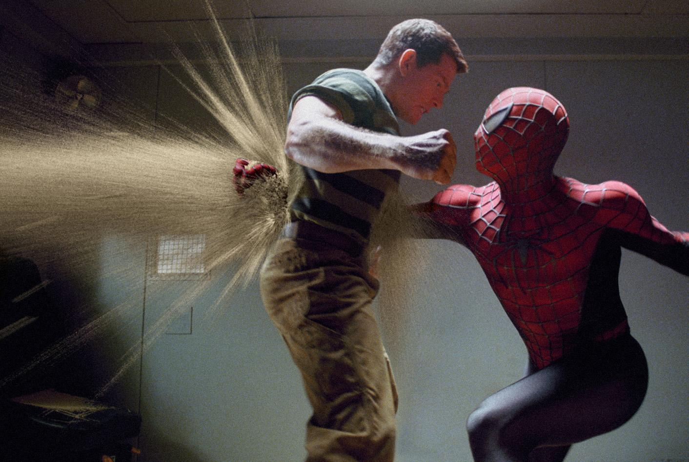
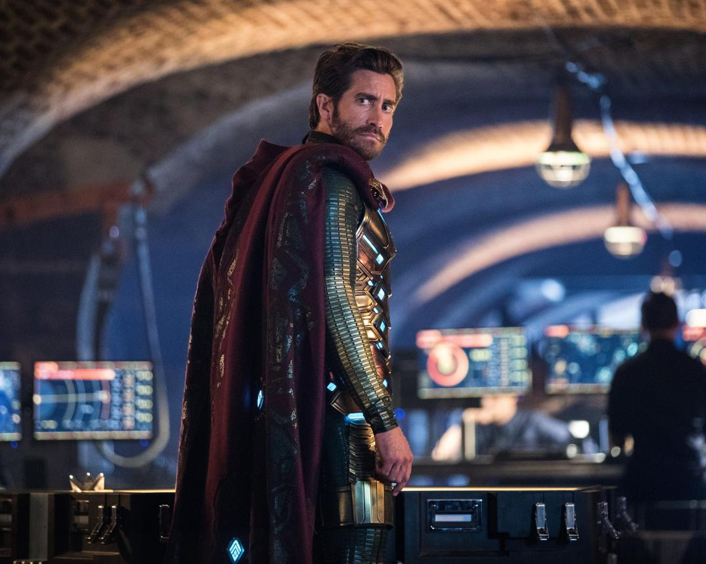
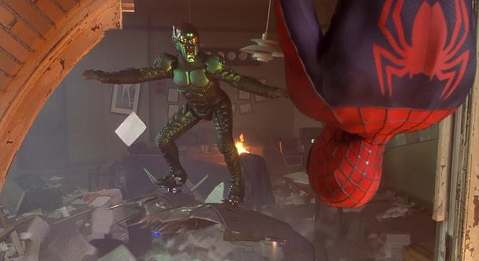
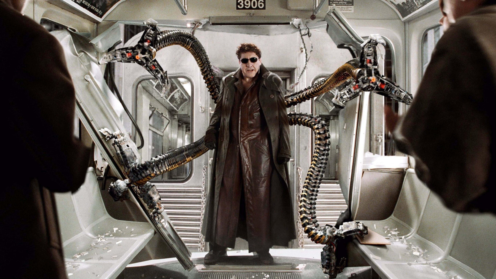

Факти
Людина-павук уперше з’явилася у коміксі Amazing Fantasy №15 у 1962 році. Його створили Стен Лі та Стів Дітко. Цей випуск став несподівано успішним.
Спочатку редакція не вірила у популярність героя-підлітка. Вважали, що читачам потрібні дорослі персонажі. Успіх повністю спростував ці сумніви.
Пітер Паркер став першим супергероєм, який боровся не лише зі злочинцями, а й з побутовими проблемами. Він мусив заробляти гроші й турбуватися про навчання. Це зробило його ближчим до читачів.
Друзі й вороги
Друзі
У коміксах Людини-павука з'явилася велика кількість другорядних персонажів, які є важливими в сюжетних лініях, у яких він знімається. Після смерті батьків (Річарда та Мері Паркер[en]) Пітер виховували тітка Мей та дядько Бен. Після того, як дядька Бена вбив грабіжник, тітка Мей стала практично єдиною родиною Пітера.
Джей Джона Джеймсон — видавець «The Daily Bugle» та керівник Паркера. Суворий критик Людини-павука, який постійно друкує негативні статті про супергероя у своїй газеті. Роббі Робертсон — редактор та довірена особа Джеймсона, є прихильником Людини-павука та його альтер-его Пітера Паркера.
Юджина «Флеша» Томпсона зазвичай зображують як шкільного хулігана, який обожнює Людину-павука, але не знає, що Людина-Павук — це Пітер Паркер. Тим часом Гаррі Осборн, сина Нормана Осборна, найчастіше визнають найкращим другом Пітера, хоча деякі версії зображують його як суперника Паркера.
Вороги
За час свого існування Людина-Павук наживає собі безліч ворогів. Найвідомішими серед них є Зелений Гоблін, Новий Зелений Гоблін (яким стає після смерті батька Гаррі), Гобґоблін, Доктор Восьминіг, Веном, Піщана людина, Ящір, Скорпіон[en], Носоріг, Хамелеон, Електро, Містеріо, Крейвен-мисливець, Стерв'ятник, Карнаж, Кінґпін, Шокер[en], Морлан, Гідромен, Розплавлена людина, Морбіус, Могильник, Елістер Смайт, Блукаючий Вогник, Молотоголовий, Шакал, Жук, Срібногривий, Грізлі та інші. До того ж Людина-Павук допомагав іншим супергероям у боротьбі з їх ворогами.



